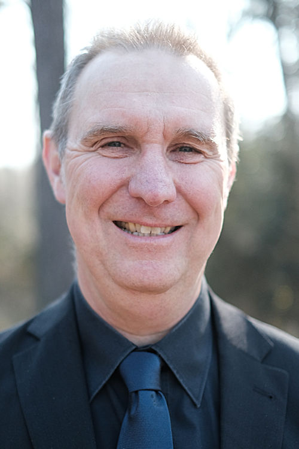

Endlich wieder live!
Für 2022 haben wir endlich wieder Konzerte geplant. Am besten die folgenden Termine schon vormerken:
Am Samstag, 21. Mai werden wir unter der Leitung von Volker Wierz ab 19 Uhr in der Citykirche in Wuppertal-Elberfeld zu hören sein und am Sonntag, 22. Mai ab 17 Uhr in der Dorper Kirche in Solingen.
Es wird Musik aus fünf Jahrhunderten, von der Renaissance bis zur Moderne erklingen: von Madrigal über Volkslied bis Jazz, von Mozart, Schütz, Bartok und Hindemith bis zu unbekannten Komponisten, die zu entdecken sich lohnt. ConBrio – das steht für den Funken der Begeisterung, der immer wieder überspringt. Der Meisterchor im Chorverband NRW hat sich der musikalischen Vielfalt verschrieben und präsentiert im Programm Sing We and Chant it! lebhaft und voller Feingefühl eine große stilistische Bandbreite mit dem Schwerpunkt auf A-cappella-Musik.
Am 7. August können Sie ConBrio Open Air beim Konzerttag der Gemeinde Unterburg erleben.
Wir über uns
Wer sind wir?
ConBrio – das steht für Chorgesang auf hohem Niveau, für den Funken der Begeisterung, der vom Chor auf das Publikum überspringt, sowie für außergewöhnliche musikalische Vielfalt. Von Beginn an hat der Chor sich in seinen Konzertprojekten immer wieder neue Schwerpunkte gesetzt, um stets weitere Kompetenzen zu erwerben und sich musikalisch weiterzuentwickeln. Mittlerweile kann die überdurchschnittlich große stilistische Bandbreite, mit der sich ConBrio präsentiert, als das Markenzeichen des Chores betrachtet werden. Sein Repertoire zieht sich quer durch 500 Jahre Musikgeschichte – ob a cappella, mit sinfonischem Orchester oder mit Rockband.

Darunter sind Achterbahnfahrten durch Zeiten und Stilrichtungen wie die Programme Falsch verbunden? (2008) und Geschichten von Nachtigall und Lerche (2017). Stilistisch konkreter waren das Renaissance-Programm ConBrio in Sepia (2010), das von einer Solinger Band begleitete Rock/Pop/Jazz-Programm ConBrio on the Rocks (2011) oder das nordische a-cappella-Programm Klanglandschaft (2012). Ein Höhepunkt für Chor und Publikum war im Jubiläumsjahr 2014 das Konzertprogramm ConBrio Explizit! mit einem von Chorleiter Frank Schaab für den Chor arrangierten Querschnitt durch das Spektrum der deutschen Musikkabarett- und Liedermacherszene. ConBrio kann kleine und gemütliche Konzerte, wie in Autohaus Schönauen oder der Werkshalle der Robuso-Stahlwarenfabrik, aber auch die ganz große Kirchenmusik wie die Messe in g-moll von Bach, das Gloria von Vivaldi (beide 2013) oder das Mozart-Requiem (2018), beides Gemeinschaftskonzerte mit dem Solinger Chor Kreuzfidel.
Woher kommen wir?
Seine Wurzeln hat ConBrio im gemischten Jugendchor der Sängerjugend der Klingenstadt Solingen e.V. Unter der erfahrenen Leitung von Heinz Walter Florin und Schulmusiker Stefan Vis nahm der Chor bald erfolgreich an den ersten Wettbewerben und Leistungssingen teil. Es folgten zahlreiche Mitwirkungen bei regionalen und überregionalen Veranstaltungen.
Im Jahre 2004 gründete sich der Chor im Sängerbund Gräfrath 1846 e.V. neu. Unter dem Namen Gemischter Chor ConBrio bildet er bis heute eine eigenständige Gruppe innerhalb des Vereins.
Als Chorleiter Stefan Vis ebenfalls im Jahre 2004 den Verein aus Zeitgründen verlassen musste, übernahm Frank Schaab die Leitung und prägte die Entwicklung ConBrios ganz entscheidend. Unter seiner Leitung erreichte der Chor beim Wettbewerb Jugend singt 2006 den Titel als bester Jugendchor des Bundeslandes NRW. Es folgten vier Meisterchortitel im Chorverband NRW, zuletzt 2019. Heute besteht der Chor aus etwa 25 Frauen und Männern – die meisten im Alter zwischen 30 und 45 Jahren.
Unser Chorleiter
Volker Wierz
Volker studierte Schulmusik und Gesangspädagogik in Dortmund. Schon zu Studienzeiten leitete er verschiedene Chöre unterschiedlichster Stilrichtungen. Neben seiner freiberuflichen gesangspädagogischen Tätigkeit arbeitet er als Sänger in unterschiedlichen Bereichen; unter anderem mit Karlheinz Stockhausen und Frieder Bernius.
1996 erhielt er einen Lehrauftrag für Gesang an der Universität Dortmund und betreute dort den Kammerchor der Universität als Stimmbildner. Darüber hinaus ist er als Referent für chorische Stimmbildung tätig. In diesem Zusammenhang betreut bzw. betreute er die unterschiedlichsten Gesangsensembles; vom Quartett über Kinder- und Jugendchöre bis hin zu Erwachsenenchören sowie internationale Projektchöre. Mit seiner Berufung zum Kreischorleiter des Sängerkreises Rhein-Wupper / Leverkusen übernahm er von 2009 bis 2018 die Leitung des Projektchores des Sängerkreises Rhein-Wupper / Leverkusen FusionaLEVocale.
Gegenwärtig ist er musikalischer Leiter der Good Voices Dürscheid, des Vokalensembles Art Tonale und des Gemischten Chores ConBrio.